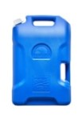

Instructions
For official government instructions, click here.

Step 1:
- Open the jug and fill it with clean, lightly-soapy water.
- Close the jug, roll it, swish it, and tilt it to wash all surfaces (x2).
- Empty the jug.

Step 2:
- Prepare a solution of 1 tsp bleach to 1 qt water.
- Fill the jug with the bleach/water solution.
- Close the jug, roll it, swish it, and tilt it to sanitize all surfaces.
- Empty the jug.

Step 3:
- Fill the jug using the drinking hose.
- Close the jug and the pull-up vent.
- Store the jug in a cool dry place.
Step 4:
- Note the date when jug was filled.
- Recommended: Repeat these steps every 6 months, however fully sanitized clean water stored in cool dry place may be safe indefinitely.